Candidate List 20260511 Previous Day Next Day Section 1: New Sources (age<1d) Cosmological Afterglow
Section 2: Old (1-5d) sources observed last night placeholder
Section 1: New Afterglow/FBOT Cands Last Night (4)
1. ZTF26aavwtgy (FBOT?) [Back to Top] [Share] [Trigger Swift] [Fritz ] [Lasair ]RA, Dec: 161.79448, -9.11934 10h47m10.67s, -9d-7m-9.61sGalactic (l, b): 258.88391, 42.87826 ext(g-r) = 0.036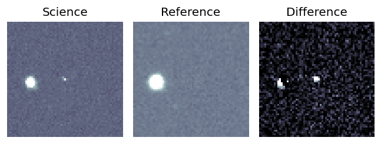
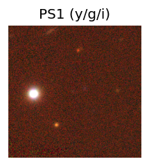
LegacySurvey: 1 sources in 3 arcsec Closest: d = 1.03 arcsec, 97.8 deg (east of north) photoz=0.42 (68% bounds 0.31, 0.6), type=PSF peak abs mag = -22.38 (68% bounds -21.62, -23.33) 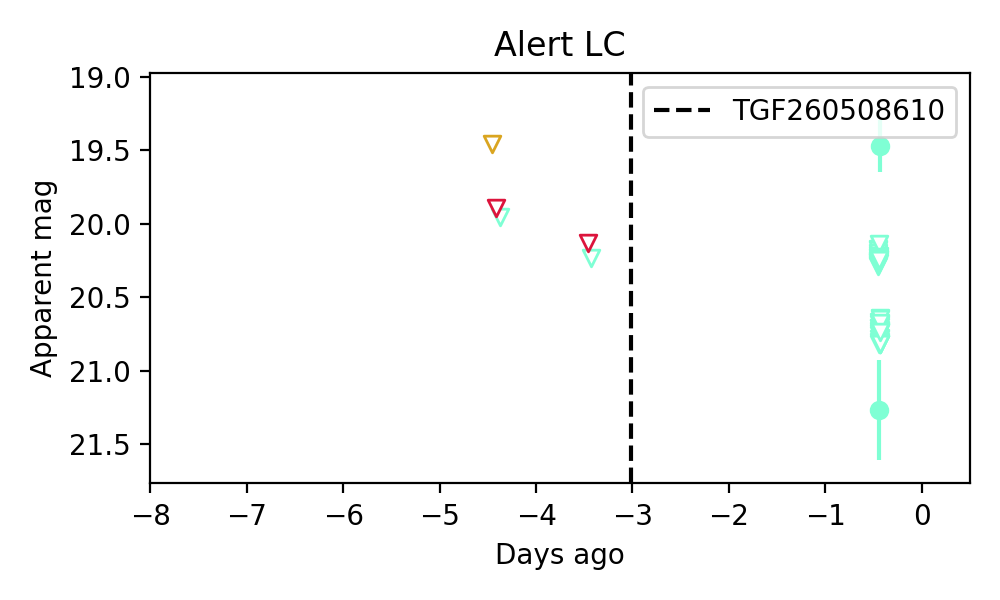
2. ZTF26aawagaj (Afterglow?FBOT?) [Back to Top] [Share] [Trigger Swift] [Fritz ] [Lasair ]RA, Dec: 168.04657, 78.89633 11h12m11.18s, 78d53m46.79sGalactic (l, b): 128.74669, 37.08672 ext(g-r) = 0.033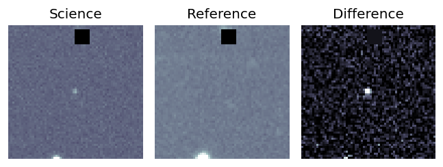
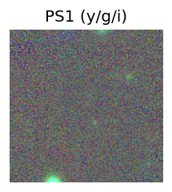
peak abs mag = -21.50 PS1: 1 source in 3 arcsec Closest: d = 7.61 arcsec photoz=0.90+/-0.39 peak abs mag = -24.34 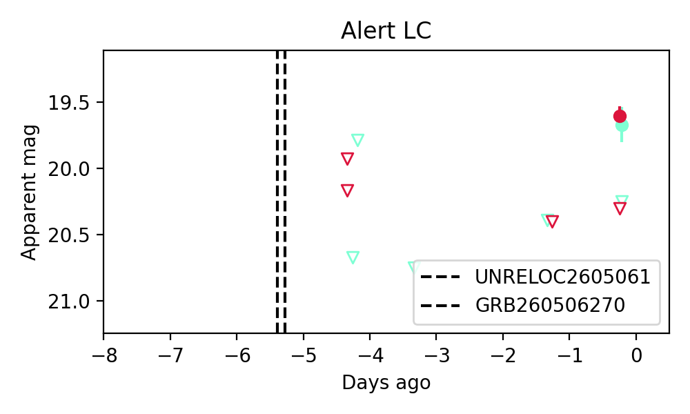
Consistent with synchrotron, g-r>0!
3. ZTF26aawaryx (Afterglow?) [Back to Top] [Share] [Trigger Swift] [Fritz ] [Lasair ]RA, Dec: 232.18189, -10.50166 15h28m43.65s, -10d-30m-5.96sGalactic (l, b): 353.68298, 36.43042 ext(g-r) = 0.213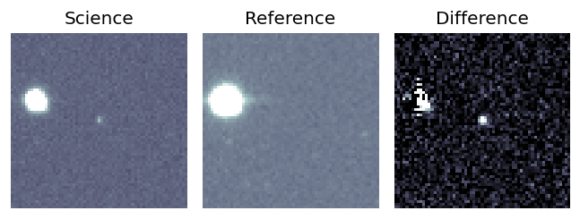
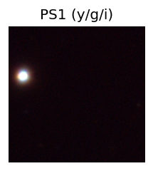
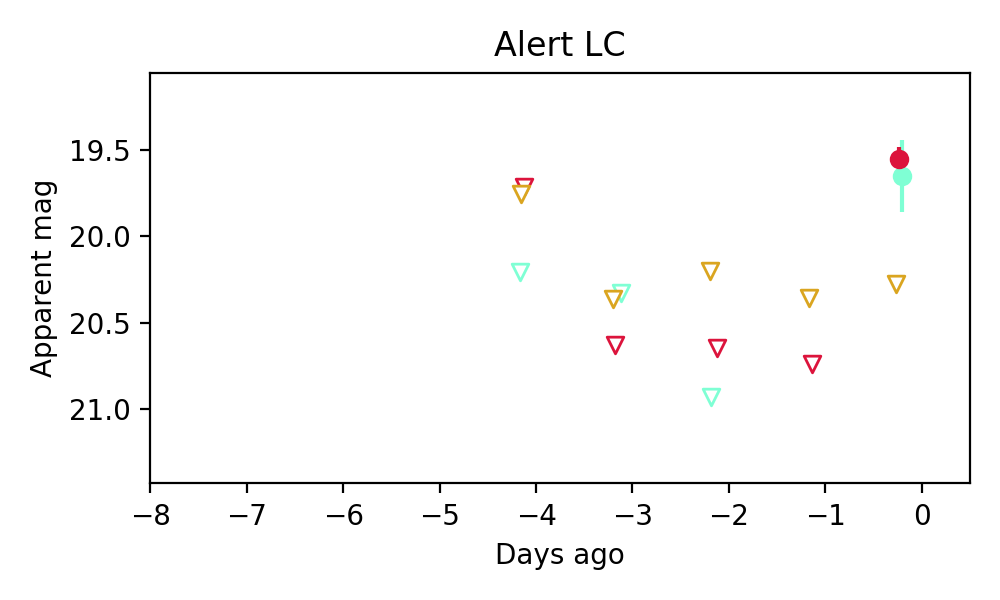
Consistent with synchrotron, g-r>0!
4. ZTF26aawchho (Afterglow?) [Back to Top] [Share] [Trigger Swift] [Fritz ] [Lasair ]RA, Dec: 271.56279, 9.07756 18h 6m15.07s, 9d 4m39.22sGalactic (l, b): 36.0182, 14.12847 ext(g-r) = 0.197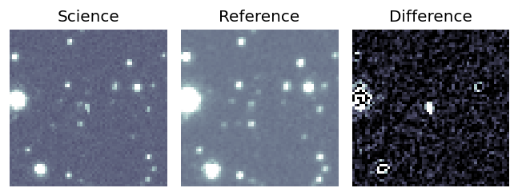
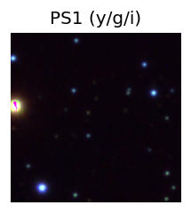
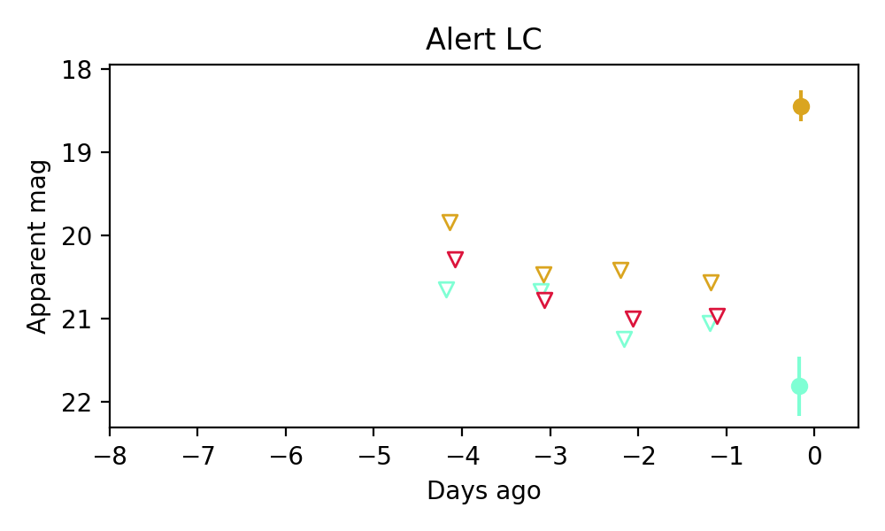
Consistent with synchrotron, g-r>0!
Section 2: Older Sources Observed Last Night (31)
0. ZTF26aauvxxu (FBOT?) [Back to Top] [Share] [Trigger Swift] [Fritz ] [Lasair ]RA, Dec: 218.41324, 62.88806 14h33m39.18s, 62d53m17.00sGalactic (l, b): 104.92345, 50.51572 ext(g-r) = 0.016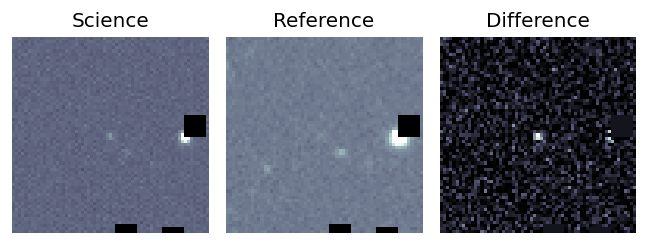
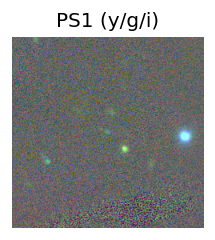
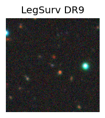
peak abs mag = -24.20 PS1: 1 source in 3 arcsec Closest: d = 0.26 arcsec photoz=0.70+/-0.18 peak abs mag = -23.82 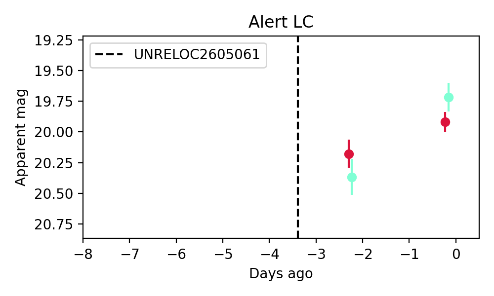
1. ZTF26aauvzgh (Afterglow?) [Back to Top] [Share] [Trigger Swift] [Fritz ] [Lasair ]RA, Dec: 209.79567, 47.25993 13h59m10.96s, 47d15m35.75sGalactic (l, b): 93.99559, 65.8823 ext(g-r) = 0.021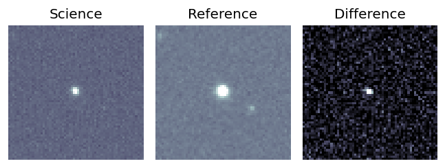
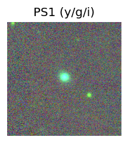
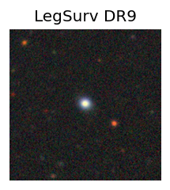
peak abs mag = -19.10 PS1: 1 source in 3 arcsec Closest: d = 0.45 arcsec photoz=0.11+/-0.02 peak abs mag = -18.91 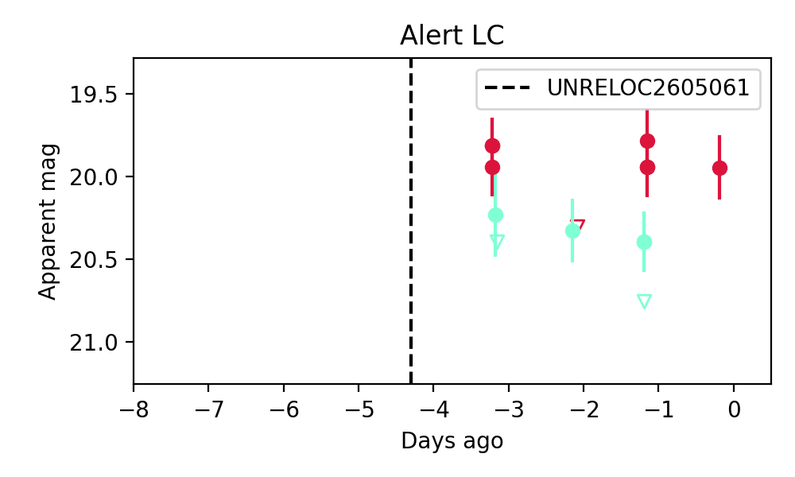
2. ZTF26aauwzfz (Afterglow?) [Back to Top] [Share] [Trigger Swift] [Fritz ] [Lasair ]RA, Dec: 196.22699, 3.82436 13h 4m54.48s, 3d49m27.70sGalactic (l, b): 311.37557, 66.47503 ext(g-r) = 0.031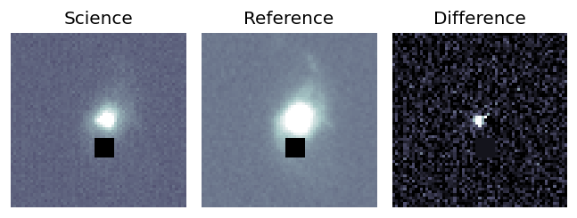
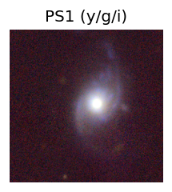
LegacySurvey: 1 sources in 3 arcsec Closest: d = 3.91 arcsec, 276.2 deg (east of north) photoz=0.04 (68% bounds 0.03, 0.04), type=SER peak abs mag = -17.05 (68% bounds -16.78, -17.33) 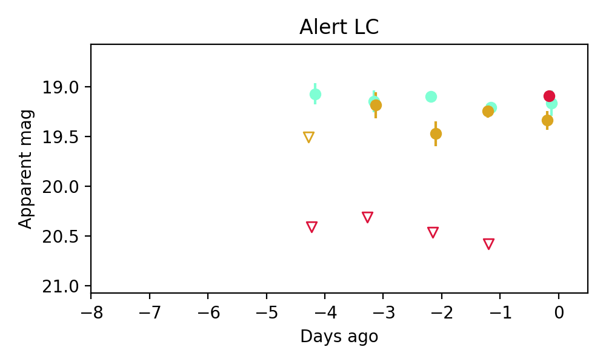
Consistent with synchrotron, g-r>0!
3. ZTF26aauxapg (Afterglow?) [Back to Top] [Share] [Trigger Swift] [Fritz ] [Lasair ]RA, Dec: 218.91377, 38.34961 14h35m39.31s, 38d20m58.59sGalactic (l, b): 66.77176, 65.49905 ext(g-r) = 0.012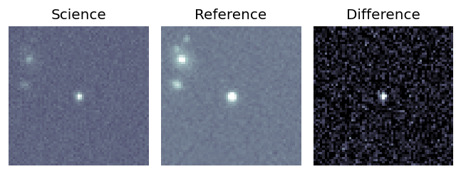
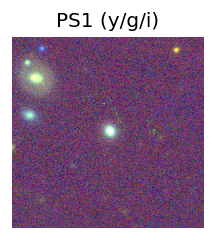
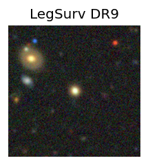
peak abs mag = -19.14 PS1: 1 source in 3 arcsec Closest: d = 0.40 arcsec photoz=0.14+/-0.02 peak abs mag = -19.19 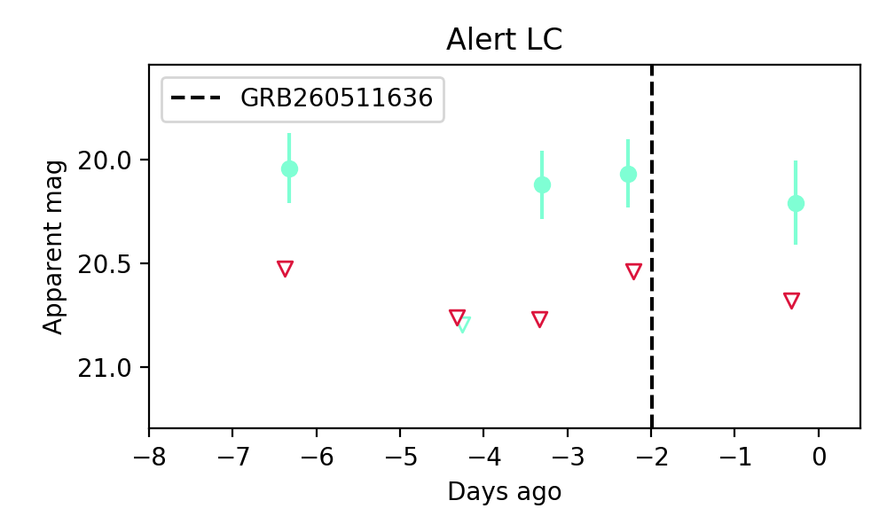
4. ZTF26aauxbav (Afterglow?FBOT?) [Back to Top] [Share] [Trigger Swift] [Fritz ] [Lasair ]RA, Dec: 226.45993, 53.27188 15h 5m50.38s, 53d16m18.76sGalactic (l, b): 88.68906, 53.97552 ext(g-r) = 0.015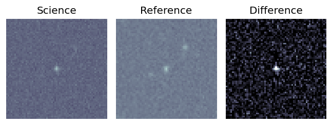
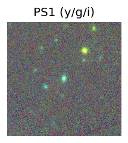
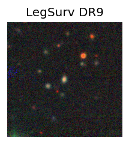
peak abs mag = -20.50 PS1: 1 source in 3 arcsec Closest: d = 0.35 arcsec photoz=0.21+/-0.09 peak abs mag = -20.22 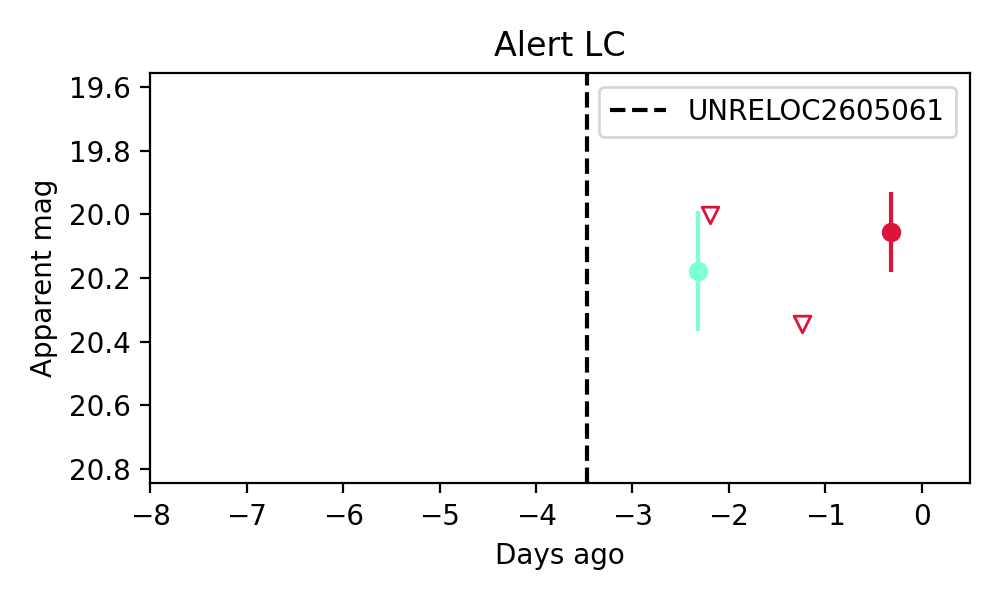
5. ZTF26aavbyhm (Afterglow?FBOT?) [Back to Top] [Share] [Trigger Swift] [Fritz ] [Lasair ]RA, Dec: 222.84002, 14.61627 14h51m21.61s, 14d36m58.57sGalactic (l, b): 14.87881, 59.43129 ext(g-r) = 0.026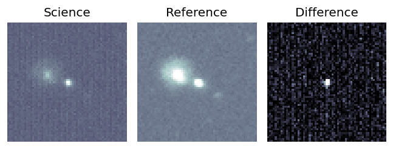
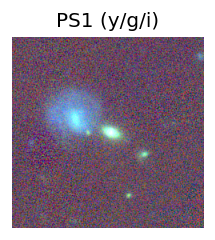
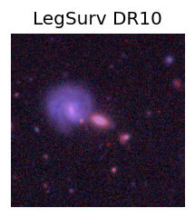
peak abs mag = -20.22 LegacySurvey: 1 sources in 3 arcsec Closest: d = 0.66 arcsec, 256.5 deg (east of north) photoz=0.14 (68% bounds 0.13, 0.16), type=PSF peak abs mag = -19.63 (68% bounds -19.44, -19.84) 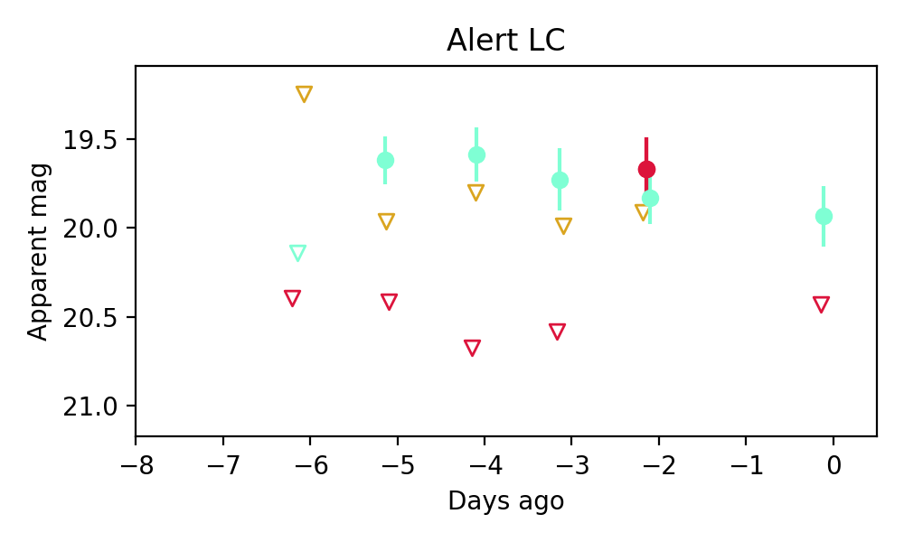
Consistent with synchrotron, g-r>0!
6. ZTF26aavedji (FBOT?) [Back to Top] [Share] [Trigger Swift] [Fritz ] [Lasair ]RA, Dec: 209.30404, -17.25626 13h57m12.97s, -17d-15m-22.53sGalactic (l, b): 324.56518, 42.83542 WARNING: -4.95 deg from ecliptic plane ext(g-r) = 0.089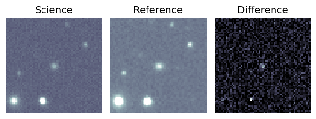
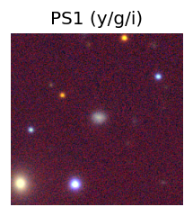
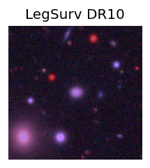
LegacySurvey: 1 sources in 3 arcsec Closest: d = 0.47 arcsec, 276.0 deg (east of north) photoz=0.11 (68% bounds 0.1, 0.13), type=SER peak abs mag = -19.71 (68% bounds -19.37, -20.0) 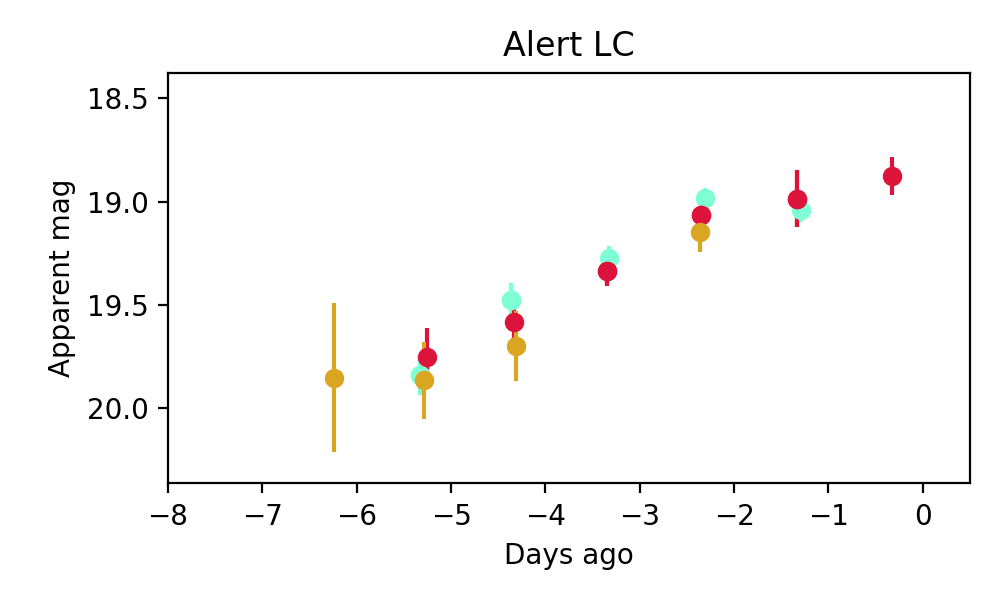
Consistent with synchrotron, g-r>0!
7. ZTF26aaveiqd (Afterglow?) [Back to Top] [Share] [Trigger Swift] [Fritz ] [Lasair ]RA, Dec: 276.90183, 7.40283 18h27m36.44s, 7d24m10.19sGalactic (l, b): 36.86065, 8.64755 ext(g-r) = 0.255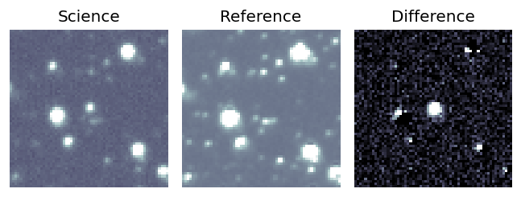
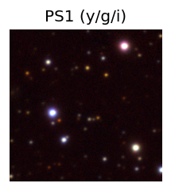
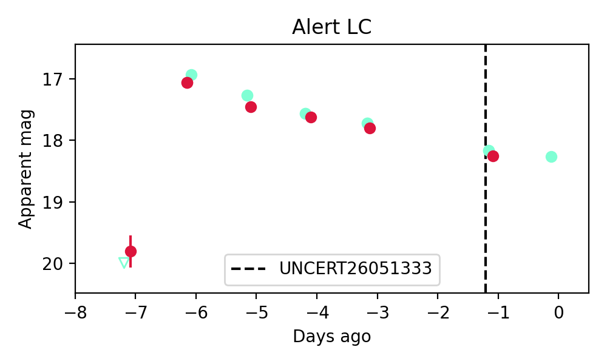
8. ZTF26aaveyho (Afterglow?) [Back to Top] [Share] [Trigger Swift] [Fritz ] [Lasair ]RA, Dec: 233.98178, 8.73671 15h35m55.63s, 8d44m12.14sGalactic (l, b): 15.48241, 47.04732 ext(g-r) = 0.044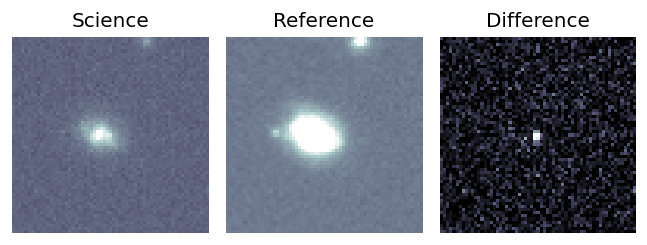
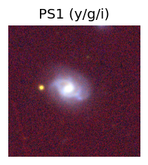
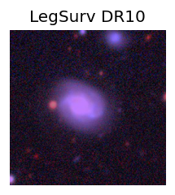
peak abs mag = -16.96 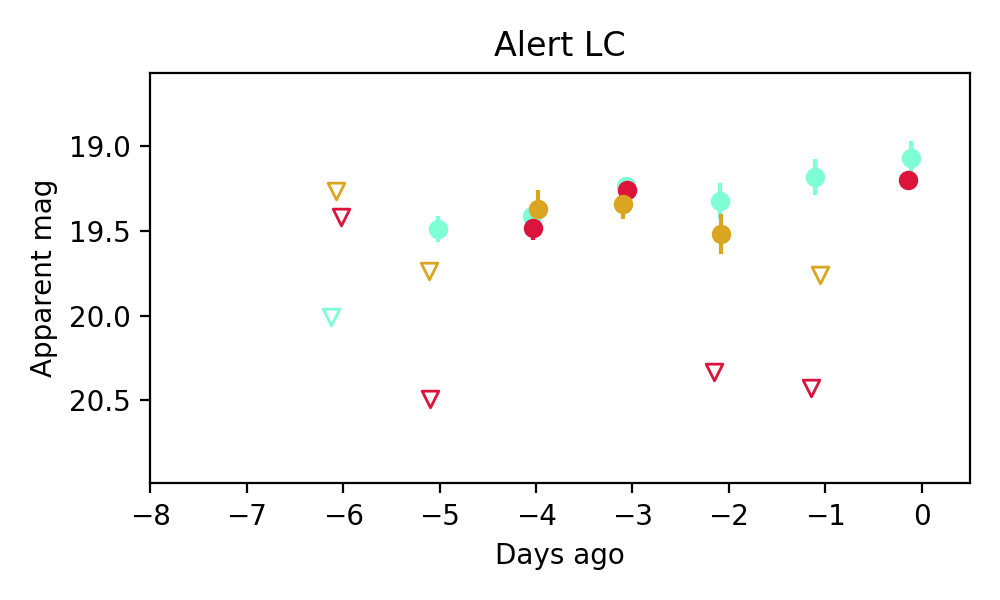
9. ZTF26aavfdzh (Afterglow?) [Back to Top] [Share] [Trigger Swift] [Fritz ] [Lasair ]RA, Dec: 279.99628, -7.63979 18h39m59.11s, -7d-38m-23.23sGalactic (l, b): 24.83123, -0.94881 ext(g-r) = 4.149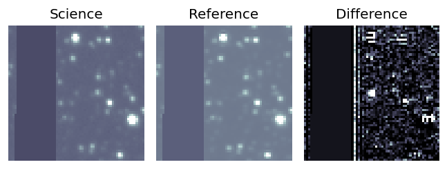
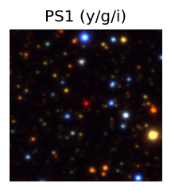
PS1: 1 source in 3 arcsec Closest: d = 0.15 arcsec photoz=0.40+/-0.03 peak abs mag = -30.36 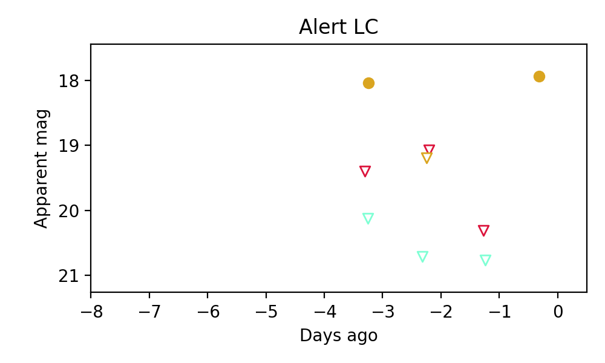
10. ZTF26aavgmiw (Afterglow?) [Back to Top] [Share] [Trigger Swift] [Fritz ] [Lasair ]RA, Dec: 201.76085, 60.31026 13h27m2.60s, 60d18m36.92sGalactic (l, b): 114.99936, 56.26625 ext(g-r) = 0.019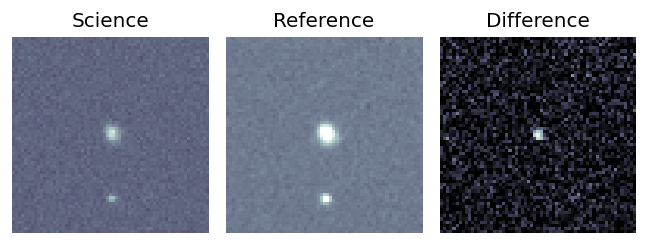
peak abs mag = -18.45 PS1: 1 source in 3 arcsec Closest: d = 0.73 arcsec photoz=0.09+/-0.02 peak abs mag = -18.30 Consistent with synchrotron, g-r>0!
11. ZTF26aavgnym (Afterglow?FBOT?) [Back to Top] [Share] [Trigger Swift] [Fritz ] [Lasair ]RA, Dec: 191.74013, 44.40317 12h46m57.63s, 44d24m11.41sGalactic (l, b): 125.62221, 72.70169 ext(g-r) = 0.024peak abs mag = -19.95 PS1: 1 source in 3 arcsec Closest: d = 0.66 arcsec photoz=0.19+/-0.01 peak abs mag = -19.95 Consistent with synchrotron, g-r>0!
12. ZTF26aavguzr (Afterglow?) [Back to Top] [Share] [Trigger Swift] [Fritz ] [Lasair ]RA, Dec: 209.91639, 5.83765 13h59m39.93s, 5d50m15.53sGalactic (l, b): 343.30874, 63.22808 ext(g-r) = 0.031peak abs mag = -19.06 peak abs mag = -18.77 LegacySurvey: 1 sources in 3 arcsec Closest: d = 2.27 arcsec, 70.0 deg (east of north) photoz=0.1 (68% bounds 0.08, 0.11), type=SER peak abs mag = -19.07 (68% bounds -18.69, -19.39)
13. ZTF26aavgzol (FBOT?) [Back to Top] [Share] [Trigger Swift] [Fritz ] [Lasair ]RA, Dec: 189.39484, -8.63491 12h37m34.76s, -8d-38m-5.68sGalactic (l, b): 297.08662, 54.07947 WARNING: -4.22 deg from ecliptic plane ext(g-r) = 0.036LegacySurvey: 1 sources in 3 arcsec Closest: d = 2.44 arcsec, 349.5 deg (east of north) photoz=0.14 (68% bounds 0.09, 0.18), type=SER peak abs mag = -19.49 (68% bounds -18.51, -20.11) Consistent with synchrotron, g-r>0!
14. ZTF26aavhyhk (FBOT?) [Back to Top] [Share] [Trigger Swift] [Fritz ] [Lasair ]RA, Dec: 212.43716, -9.26567 14h 9m44.92s, -9d-15m-56.42sGalactic (l, b): 333.17164, 48.95343 WARNING: 3.6 deg from ecliptic plane ext(g-r) = 0.042LegacySurvey: 1 sources in 3 arcsec Closest: d = 3.77 arcsec, 229.3 deg (east of north) photoz=0.14 (68% bounds 0.06, 0.28), type=EXP peak abs mag = -19.72 (68% bounds -17.74, -21.38) Consistent with synchrotron, g-r>0!
15. ZTF26aavilqo (Afterglow?) [Back to Top] [Share] [Trigger Swift] [Fritz ] [Lasair ]RA, Dec: 225.20981, 1.33864 15h 0m50.36s, 1d20m19.09sGalactic (l, b): 358.67597, 49.66757 ext(g-r) = 0.054peak abs mag = -17.79 LegacySurvey: 1 sources in 3 arcsec Closest: d = 4.51 arcsec, 137.5 deg (east of north) photoz=0.03 (68% bounds 0.02, 0.03), type=SER peak abs mag = -17.28 (68% bounds -16.84, -17.69)
16. ZTF26aavktva (Afterglow?FBOT?) [Back to Top] [Share] [Trigger Swift] [Fritz ] [Lasair ]RA, Dec: 233.88066, 8.96581 15h35m31.36s, 8d57m56.92sGalactic (l, b): 15.69702, 47.25022 ext(g-r) = 0.041peak abs mag = -19.62 LegacySurvey: 1 sources in 3 arcsec Closest: d = 0.63 arcsec, 166.7 deg (east of north) photoz=0.13 (68% bounds 0.11, 0.13), type=SER peak abs mag = -19.72 (68% bounds -19.52, -19.88) Consistent with synchrotron, g-r>0!
17. ZTF26aavqbzd (FBOT?) [Back to Top] [Share] [Trigger Swift] [Fritz ] [Lasair ]RA, Dec: 206.76805, -1.72251 13h47m4.33s, -1d-43m-21.03sGalactic (l, b): 330.04933, 58.18963 ext(g-r) = 0.044peak abs mag = -20.09 LegacySurvey: 1 sources in 3 arcsec Closest: d = 0.40 arcsec, 292.0 deg (east of north) photoz=0.14 (68% bounds 0.12, 0.19), type=SER peak abs mag = -19.17 (68% bounds -18.69, -19.87) Consistent with synchrotron, g-r>0!
18. ZTF26aavqdbg (Afterglow?) [Back to Top] [Share] [Trigger Swift] [Fritz ] [Lasair ]RA, Dec: 203.39262, -20.63455 13h33m34.23s, -20d-38m-4.38sGalactic (l, b): 316.0661, 41.1602 ext(g-r) = 0.087
19. ZTF26aavqrhw (Afterglow?) [Back to Top] [Share] [Trigger Swift] [Fritz ] [Lasair ]RA, Dec: 223.81917, 11.90807 14h55m16.60s, 11d54m29.06sGalactic (l, b): 11.36472, 57.23058 ext(g-r) = 0.031peak abs mag = -23.28 LegacySurvey: 1 sources in 3 arcsec Closest: d = 0.48 arcsec, 208.3 deg (east of north) photoz=0.96 (68% bounds 0.58, 1.63), type=PSF peak abs mag = -23.83 (68% bounds -22.47, -25.24) Consistent with synchrotron, g-r>0!
20. ZTF26aavrcwo (Afterglow?) [Back to Top] [Share] [Trigger Swift] [Fritz ] [Lasair ]RA, Dec: 202.35557, 78.80742 13h29m25.34s, 78d48m26.71sGalactic (l, b): 120.59812, 38.14816 ext(g-r) = 0.037PS1: 1 source in 3 arcsec Closest: d = 3.07 arcsec photoz=0.02+/-0.00 peak abs mag = -16.38 Consistent with synchrotron, g-r>0!
21. ZTF26aavrsod (Afterglow?) [Back to Top] [Share] [Trigger Swift] [Fritz ] [Lasair ]RA, Dec: 242.92378, -24.06626 16h11m41.71s, -24d-3m-58.53sGalactic (l, b): 350.94051, 19.61509 WARNING: -2.91 deg from ecliptic plane ext(g-r) = 0.27 Consistent with synchrotron, g-r>0!
22. ZTF26aavvmbm (Afterglow?) [Back to Top] [Share] [Trigger Swift] [Fritz ] [Lasair ]RA, Dec: 287.55224, -20.01184 19h10m12.54s, -20d 0m-42.62sGalactic (l, b): 16.87627, -12.97114 WARNING: 2.43 deg from ecliptic plane ext(g-r) = 0.166
23. ZTF26aavvucu (FBOT?) [Back to Top] [Share] [Trigger Swift] [Fritz ] [Lasair ]RA, Dec: 110.4313, 4.71521 7h21m43.51s, 4d42m54.77sGalactic (l, b): 212.16186, 8.87963 ext(g-r) = 0.167PS1: 1 source in 3 arcsec Closest: d = 3.37 arcsec photoz=0.16+/-0.04 peak abs mag = -20.11
24. ZTF26aavvxwd (FBOT?) [Back to Top] [Share] [Trigger Swift] [Fritz ] [Lasair ]RA, Dec: 112.32193, 8.12005 7h29m17.26s, 8d 7m12.17sGalactic (l, b): 209.91323, 12.07869 ext(g-r) = 0.044PS1: 1 source in 3 arcsec Closest: d = 9.75 arcsec photoz=0.74+/-0.43 peak abs mag = -27.18
25. ZTF26aavvytp (Afterglow?) [Back to Top] [Share] [Trigger Swift] [Fritz ] [Lasair ]RA, Dec: 156.77196, 8.49759 10h27m5.27s, 8d29m51.32sGalactic (l, b): 234.72574, 51.14169 WARNING: -1.12 deg from ecliptic plane ext(g-r) = 0.033LegacySurvey: 1 sources in 3 arcsec Closest: d = 1.84 arcsec, 125.6 deg (east of north) photoz=1.22 (68% bounds 0.88, 1.6), type=EXP peak abs mag = -25.45 (68% bounds -24.58, -26.17)
26. ZTF26aavwktm (FBOT?) [Back to Top] [Share] [Trigger Swift] [Fritz ] [Lasair ]RA, Dec: 240.7095, 56.92329 16h 2m50.28s, 56d55m23.86sGalactic (l, b): 87.97354, 45.07582 ext(g-r) = 0.02peak abs mag = -21.30 PS1: 1 source in 3 arcsec Closest: d = 0.43 arcsec photoz=0.54+/-0.24 peak abs mag = -22.09 Consistent with synchrotron, g-r>0!
27. ZTF26aavyryt (FBOT?) [Back to Top] [Share] [Trigger Swift] [Fritz ] [Lasair ]RA, Dec: 206.74407, 4.34496 13h46m58.58s, 4d20m41.85sGalactic (l, b): 335.54484, 63.64315 ext(g-r) = 0.021LegacySurvey: 1 sources in 3 arcsec Closest: d = 0.91 arcsec, 199.7 deg (east of north) photoz=1.01 (68% bounds 0.7, 1.54), type=PSF peak abs mag = -24.66 (68% bounds -23.69, -25.77)
28. ZTF26aawampy (Afterglow?) [Back to Top] [Share] [Trigger Swift] [Fritz ] [Lasair ]RA, Dec: 231.03995, 8.68082 15h24m9.59s, 8d40m50.94sGalactic (l, b): 13.13131, 49.49931 ext(g-r) = 0.036peak abs mag = -17.66 LegacySurvey: 1 sources in 3 arcsec Closest: d = 1.85 arcsec, 248.7 deg (east of north) photoz=0.04 (68% bounds 0.03, 0.05), type=SER peak abs mag = -17.52 (68% bounds -16.86, -17.91) Consistent with synchrotron, g-r>0!
29. ZTF26aawbmgf (Afterglow?) [Back to Top] [Share] [Trigger Swift] [Fritz ] [Lasair ]RA, Dec: 222.69066, 66.5819 14h50m45.76s, 66d34m54.83sGalactic (l, b): 106.24354, 46.4913 ext(g-r) = 0.022 Consistent with synchrotron, g-r>0!
30. ZTF26aawcpfn (FBOT?) [Back to Top] [Share] [Trigger Swift] [Fritz ] [Lasair ]RA, Dec: 212.93754, -4.40491 14h11m45.01s, -4d-24m-17.69sGalactic (l, b): 337.57569, 52.97844 ext(g-r) = 0.037LegacySurvey: 1 sources in 3 arcsec Closest: d = 0.77 arcsec, 12.9 deg (east of north) photoz=0.51 (68% bounds 0.36, 0.61), type=REX peak abs mag = -22.67 (68% bounds -21.79, -23.14)